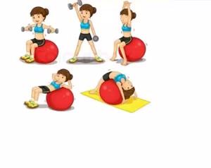
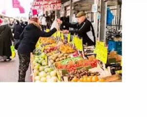
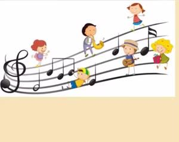
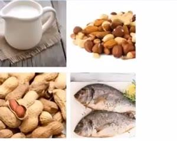
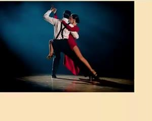
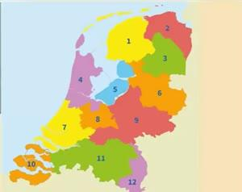
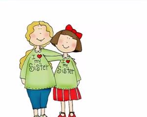
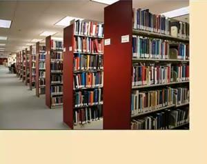
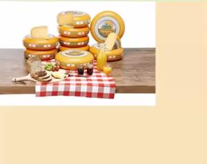

Spreken examen A2 · Oefenen 4 | 12 題完整分析 | 來源 YouTube ▶

Waarom sport je?
你為什麼運動？
Ik sport om gezond te blijven.
我運動是為了保持健康。

Waarom ga je naar de markt?
你為什麼去市場？
Ik ga naar de markt om vis te kopen.
我去市場是為了買魚。

Luister je vaak naar muziek?
你常聽音樂嗎？
Ja, ik luister er iedere dag naar.
是的，我每天都聽。
Hou je van pizza?
你喜歡披薩嗎？
Ja, ik hou ervan.
是的，我喜歡。

Koop je wel eens iets op de markt?
你偶爾會在市場買東西嗎？
Ja, ik koop er vis en noten.
會，我在那買魚和堅果。
Kijk je vaak naar dit tv-programma?
你常看這個電視節目嗎？
Ja, ik kijk er iedere week naar.
是，我每週都看。

Kun je goed dansen?
你舞跳得好嗎？
Nee, maar ik kan wel goed zingen.
不，但我歌唱得不錯。

Kom je uit Nederland?
你來自荷蘭嗎？
Nee, ik kom niet uit Nederland.
不，我不是來自荷蘭。
Heeft u kinderen?
您有小孩嗎？
Nee, ik heb geen kinderen.
不，我沒有小孩。

Heb je een zus?
你有姊妹嗎？
Ja, ik heb twee zussen.
有，我有兩個姊妹。

Waarom wil je in de bibliotheek studeren?
你為什麼想在圖書館念書？
Omdat het rustig is.
因為很安靜。

Hou je van Nederlandse kaas?
你喜歡荷蘭起司嗎？
Nee, ik hou er niet van.
不，我不喜歡。